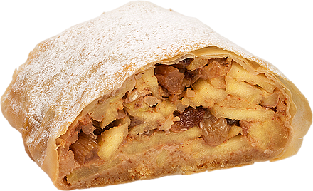

Teig: Mehl, Fett, Zucker, Ei und Vanillezucker zu einem Teig verarbeiten und auf einem Blech verteilen. Ich benutze immer ein Obstkuchenblech, das ist etwas kleiner als das übliche Blech. Dann die Äpfel schälen, in Stücke schneiden und mit dem Apfelmus in einer Schüssel vermischen. Die Masse auf den Teig geben.
Streusel: Das Fett im Topf schmelzen, vom Herd nehmen, die restlichen Zutaten vermischen und dazugeben. Diese Masse kurz abkühlen lassen und dann Streusel erzeugen, indem man Teig in die Hand nimmt und zwischen beiden Händen zerbröselt. Natürlich am besten über dem Kuchen auf dem Blech. Dann auf der mittleren Schiene bei ca. 175 Grad Heißluft ca. 45 Min. backen. Aber Vorsicht: Immer beobachten, da Streusel schnell verbrennen.
Dazu passt Sahne oder auch mal Vanilleeis. Man kann auch auf die Apfelmasse gehackte Walnüsse o. ä. geben. Und darüber dann die Streusel.
